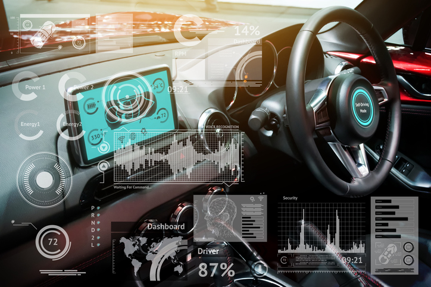

Blockchain is a type of distributed ledger for maintaining a permanent and tamper-proof record of transactional data.
A blockchain functions as a decentralized database that is managed by computers belonging to a peer-to-peer (P2P) network.
Each of the computers in the distributed network maintains a copy of the ledger to prevent a single point of failure (SPOF) and all copies are updated and validated simultaneously.

The emergence of autonomous things over the last few years, I believe, has been an exciting development within technology that is only going to become more innovative and more and more exciting as time goes on.
Autonomous vehicles are constantly collecting data from their environment; such as the road conditions, potential hazards, pedestrians, surrounding vehicles and even storing the routes and roads themselves.
Autonomous things are only going to continue to advance at a break neck speed.
An immersive experience is an illusory environment that completely surrounds you such that you feel that you are inside it and part of it. The term is associated with technology environments that command the senses such as virtual reality and mixed reality.